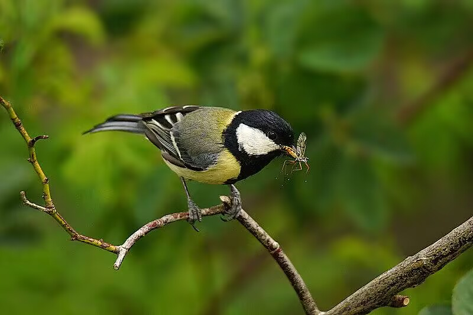
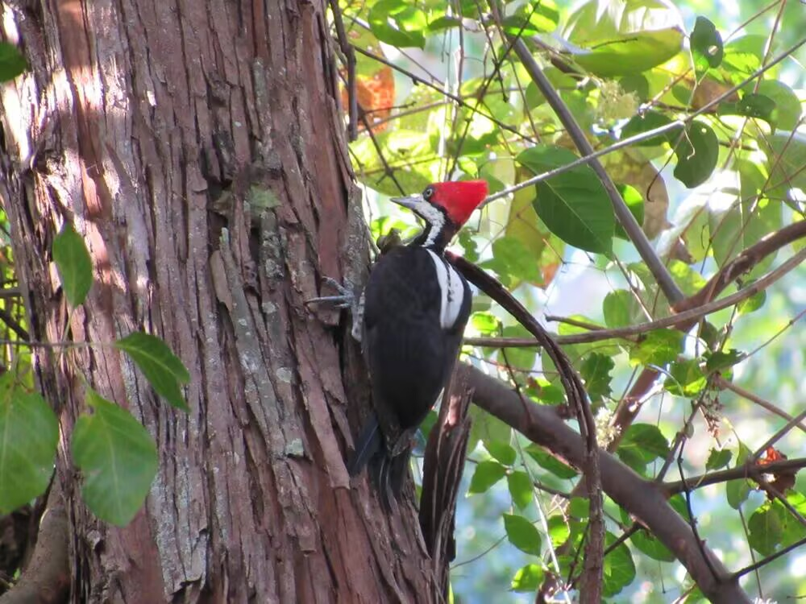
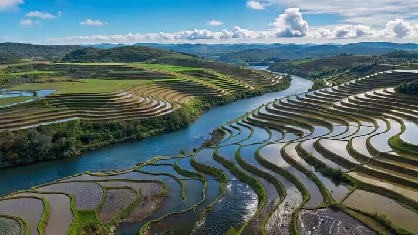

羽翼守望者


食虫鸟类是农业和森林生态系统中重要的天然害虫控制者。据估计，全球食虫鸟类每年消耗4至5亿吨昆虫猎物。一项覆盖55篇文献、179个案例研究的全球荟萃分析表明，野生鸟类能减少作物损害和害虫数量，同时显著提高作物产量。

鸟类作为生物防治 agents 的积极效应在采用传统化学方法的常规农场中尤为显著。在森林中，鸟类消耗的昆虫占全球总量的75%（约每年3亿吨）。鸟类提供的生物防治服务价值数以百万美元计。

保护食虫鸟类不仅可减少农药使用，还能维持生态平衡，促进农业可持续发展。研究表明，每公顷农田中鸟类可减少约30%的虫害损失。
📖 权威来源：点此处 查看BirdLife International《Birds control insect pests in farmlands and forests》（2023）